使用Cisco Packet Tracer7 (思科网络模拟器)验证ppp点对点通信。

实验内容
使用packet Tracer 模拟两台路由器，进行点对点通信测试。
实验设计
实验设备结构图：
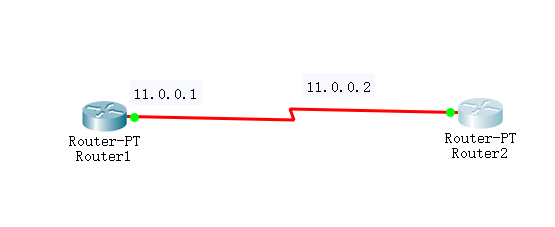
配置路由器
由于只需要验证点对点通信，对路由器的配置，相对比较简单，
路由器之间使用的是serial DCE 串口线相连。
配置Router1的serial 2/0串口为ip: 11.0.0.1 mask: 255.0.0.0,并配置时钟频率为64000
1 | Router> enable |
配置Router2的serial 3/0 串口为ip: 11.0.0.2 mask： 255.0.0.0
1 | Router> enable |
- 查看两个路由的串口状态：
RA:
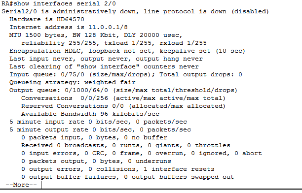
RB:
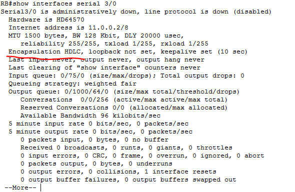
可以看到，路由器这里点对点通信默认使用的HDLC(High Level Data Link Control, 面向比特的同步协议)协议。
HDLC情况下验证ping：
11.0.0.1 ping 11.0.0.2:
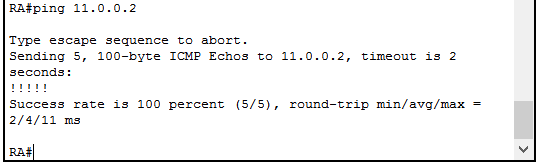
11.0.0.2 ping 11.0.0.1:
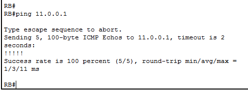
ping 测试成功。
配置RA,RB使用ppp协议，再做ping测试：
- 先配置RA 使用 ppp协议：
1 | RA # configure terminal |
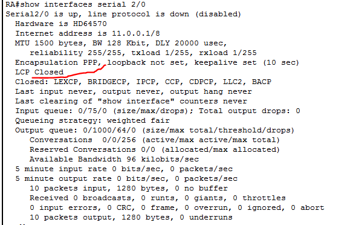
可以看到RA当前使用的是ppp写协议，LCP处于Closed,此时，路由器应当无法进行点对点通信。
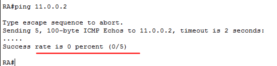
- 配置RB使用ppp协议：
1 | RB # configure terminal |
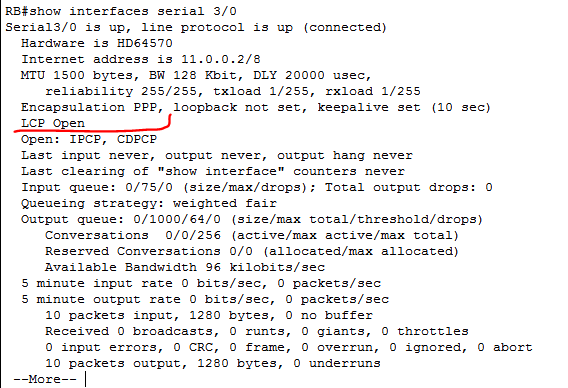
这时，可以看到RB也是使用了ppp协议，且LCP也处于Open状态，路由器之间可以进行通信。
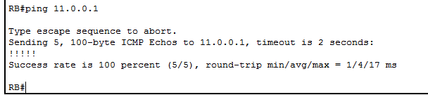
给ppp协议添加authentication鉴别
- 先配置RA，使其开启ppp chap (Challenge Handshake Authentication Protocol), 给RB 添加身份验证
1 | RA # config terminal |
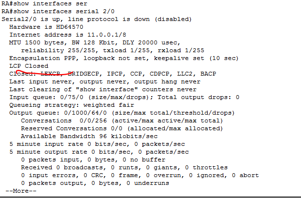
此时，虽然RA和RB都是使用ppp协议，但是RA给RB添加了身份认证，而RB则没有，此时LCP处于Closed状态，它们之间无法进行通信。
- 配置RB, 添加对RA的身份验证：
1 | RB # config terminal |
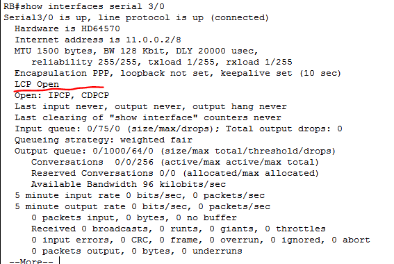
可以看到此时，LCP已经打开，路由器之间可以进行点对点通信。
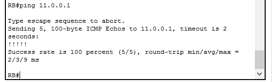
实验结果
通过该实验，简单地验证了ppp协议在点对点信道中的使用。